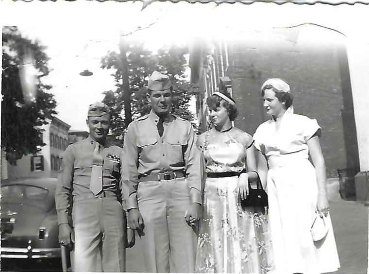
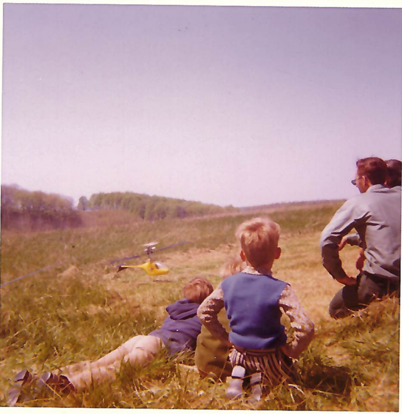

Dorothy Wojan (nee Hines) was born on June 27th, 1936, in Fredrick, Maryland, to Vernon and Lydia Hines. Dorothy had thirteen siblings (two of whom did not survive past infancy), and they helped their parents take care of the crops and livestock on their farm.
While growing up during the Great Depression, Dorothy’s childhood was not easy - her parents were strict, and everything thing they owned was handmade. She recalled how their clothes were hand sewn by her mother using whatever materials they had on hand, even feedbags.
Despite going through many hardships, Dorothy has remained adamant that she would not want to go back and change her past if given the opportunity - all of those experiences have shaped her to be the person she is today.
Dorothy eventually married Arthur Wojan on August 29th, 1953. She met Arthur one summer at a pool while he was still in the Army, and he offered to teach her how to swim. She recalled fondly that during the swimming lesson, Arthur told her that he was going to let her go so she could try swimming without support, and she told him that if he let her go, she would take him down with her.
After marrying Arthur, they eventually settled down in Charlevoix, Michigan, and had five children - Vickie, Walter, Holly, Anne, and Thomas. She has held several jobs in her lifetime, which included sewing stockings and gun cases, as well as working as a manager at a steel factory.
Currently, Dorothy lives in Texas with her daughter, Anne, and is frequently visited by her other children and grandchildren. In her spare time, she enjoys gardening, reading, and sitting outside watching the birds.